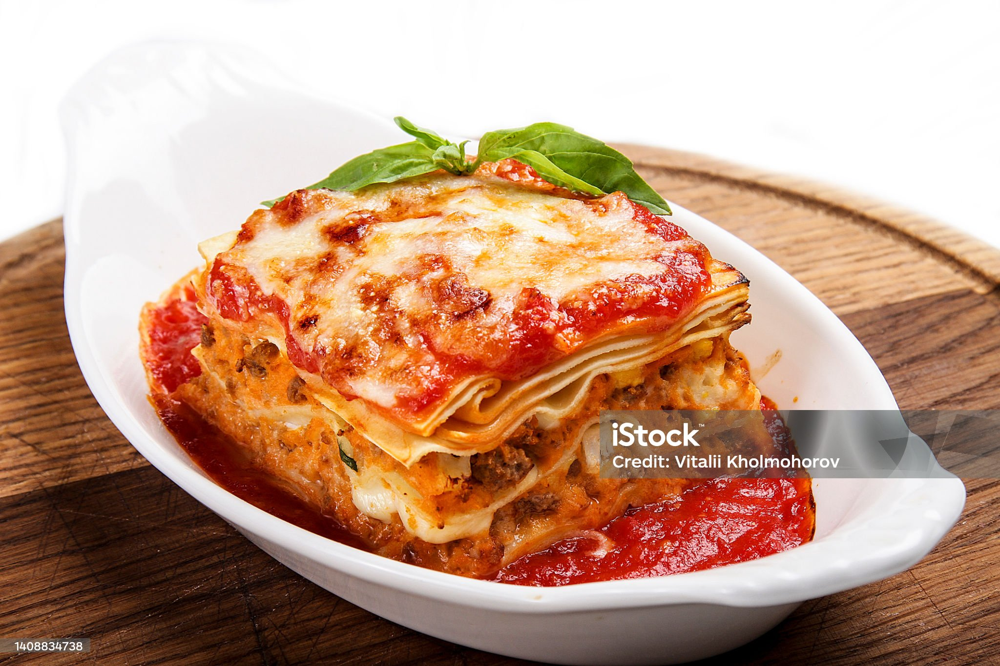
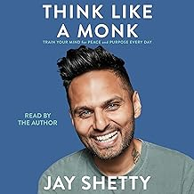
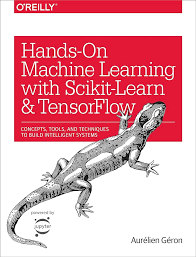
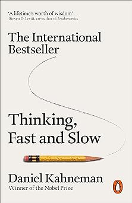
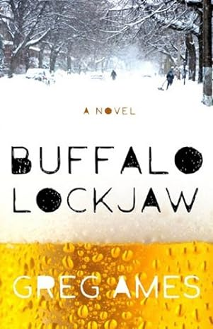

In 2023 I went to Bulgaria, which is my birth country. I went to visit family and I visited two towns in Bulgaria. The one town is called Lom, which sits on Danube river and on the opposite side you can see Romania. The other town,which is actually a big sea resort city is called Varna. It is on Black Sea. It has a lot of beaches, small sea villages and places with access to Black Sea. While in Varna, I visited a historic landmark town from centuries ago, before even the country was established. It was very interesting to see the creativity of how the living habits of these tribes were represented in 21st century.
One of my favorite restaurants is Bar Bill Tavern in East Aurora, NY. The restaurant is very famous in Western New York area. It is local and offers one of Buffalo's staple foods- Chicken Wings. It is my favorite restaurant because it is authentic, local and the wings are one of a kind. A lot of visitors from outside of Western New York, go to this restaurant to try their famous chicken wings. Because of that it is really hard to find free tables and the waiting time is very long, so the guests of the restaurant have to be patient.
Go to Bar Bill
Lasagna is one of my favorite foods. I like to eat it warm, fresh out of the oven.I like to have some tomato sauce on the bottom of the plate.I like the layers to be stacekd still, not broken down. I like to eat it as soon as possible while the cheese is still stretchy.
| Name of the Book | An image of the Book | The author of the Book | Summary of the Book |
|---|---|---|---|
| Think like a Monk |  | Jay Shetty | The author of the book is using his own teachings and experiences from when he was monk in India.The book offers an application of these teachings in real life. They can be applied to situations and help a person understand how to overcome negativity, overthinking and other overwhelming situations. |
| Hands-On Machine Learning with Scikit-Learn & TensorFlow |  | Aurélien Géron | The book offers practical conccepts,tools and techniques to build machine learning systems.It goes through the algorithms and explains the code step by step in jupyter notebook.Very useful book about understanding scikit-learn,tensor flow and different machine learning algorithms. |
| Thinking, Fast and Slow |  | Daniel Kahneman | This books explores answers to the question if humans are rational beings.It examines the thought process that goes into every decision we make.It is fulll of values analyzing different methods how to control your mind so you can have much more control over your life. |
| Buffalo Lockjaw |  | Greg Ames | This is a novel in which the author is coming back to his hometowm Buffalo for Thanksgiving.The mother of the author is sick confined in a nursing home.The author is convinced that his mother would agree to end the suffering of a terminally ill patient. The father of the author is definitely agianst it. This book is a novel about Buffalo, a family, the beauty and the pain of different circumstances described in the story. |